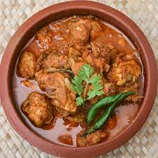

Best Chicken Curry

Chicken Curry Recipe
This chicken curry recipe was handed down to me by my grandmother who had learned it
from her mother. It's got a delicious sauce and even convinced my husband that he might
actually enjoy curries!
Ingredients
- 1 medium onion
- 3 colves garlic
- Small piece of ginger (1 inch square)
- 3 bunches coriander
- 1 tin chopped tomatoes, drained, retaining juice and tomatoes separately
- 1 teaspoon turmeric
- 2 teaspoons salt
- 2 teaspoons garam masala
- 1 teaspoon chilli powder
- 1 ¼ tablespoons butterfat
- 2 tablespoons yoghurt
- 1 ½ lbs chicken breast
- 1 dessert spoon lemon juice
- 1 dessert spoon desiccated coconut
Steps
- Mix the onion, garlic, ginger and herbs with the drained tomato juice until
slushed. Mix in the turmeric, salt, garam masala and chilli powder.
- Fry this mixture in the butterfat until liquid has dried up ish.
- Add tomatoes and yoghurt and mix well.
- Add the chicken pieces and stir a bit.
- Put the mixture in a casserole dish and place in the oven at 200°C normal,
180°C fan, gas 6 for half an hour. Turn down to 130°C normal, 110°C fan,
gas 1 to 2 for an hour and a half.
- Take out and leave until the next day.
- Reheat to boiling in the oven, or saucepan, simmer gently for half an hour,
add lemon juice and coconut and stir around a bit, continue cooking for a
further half an hour and serve.